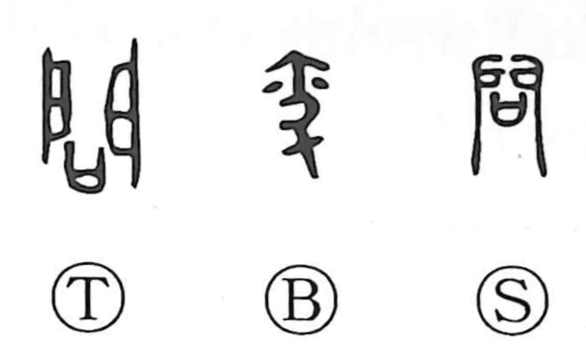

問

Kun: tou, toi, tazuneru | On: mon, ton
to ask ・ question ・ inquiry
Explanation
問 places 口, a vessel holding a prayer, before 門, the double doors of a shrine cabinet. The prayer is offered at the doors to ask the god’s intention and seek a revelation. The question is addressed to a divine presence enclosed within the shrine.
From this act of seeking an answer, 問 broadens to asking another person, making an inquiry, and investigating a matter. Its original setting gives the question a deliberate purpose: something unknown is brought before a power that can disclose it. Later uses also include visiting or sending a message to ask after someone, where an inquiry becomes an expression of concern.